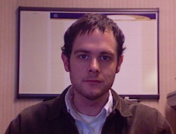

FreeBSD GNOME Project: Contact Us
Contacts
Any questions regarding GNOME on FreeBSD should be addressed to the freebsd-gnome mailing list. All FreeBSD GNOME users, as well as those who wish to help improve and maintain GNOME on FreeBSD, should feel free to join the mailing list. You do not have to subscribe if you just want to report a problem or ask for help -- just send your message to freebsd-gnome@FreeBSD.org.
All relevant discussion should be carried out in the mailing list, unless there is a good reason for contacting one of the developers directly. The people involved in the FreeBSD GNOME Project are:
|
Alexander Nedotsukov
(bland@FreeBSD.org) IRC (FreeNode): bland |

|
|
|
|
Alexander Logvinov (avl@FreeBSD.org) | |
|
Jeremy Messenger
(mezz@FreeBSD.org) IRC (FreeNode): mezz7 |
||
|
Joe Marcus Clarke
(marcus@FreeBSD.org) WWW: www.marcuscom.com AIM: FreeBSDMarcus IRC (FreeNode): FreeBSDMarcus |
||
|
Koop Mast
(kwm@FreeBSD.org) IRC (FreeNode): kwm |

|
|
|  |
Michael Johnson
(ahze@FreeBSD.org) IRC (FreeNode): ahze |
|
FreeBSD GNOME developers can also be found lurking on IRC, in #freebsd-gnome on FreeNode (irc.freenode.net).
The FreeBSD GNOME team alumni are: